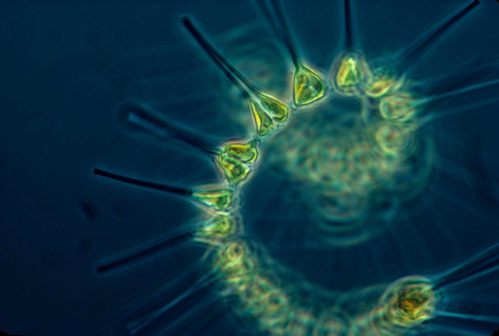
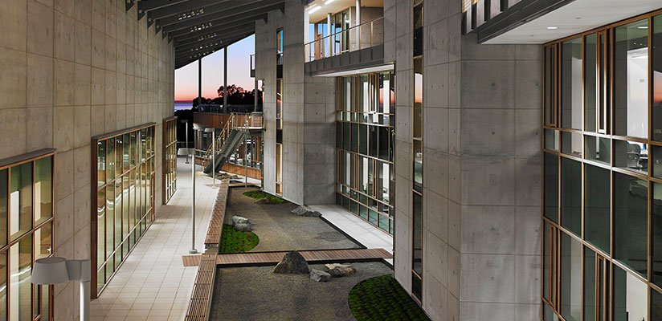

Diatom classification using machine learning
I trained a model to find and count diatoms in microscope images.
- J. Craig Venter Institute
- 2024
- High school internship
The internship
What I did
In 2024, while I was in high school, I interned at the J. Craig Venter Institute.
The lab was working on monitoring algal blooms. Blooms can hurt water quality and marine life, so the lab tracks what is growing in the water and how much of it there is.
My part was the diatoms. I trained a machine learning model to find them in microscope images and count them.
I want to study engineering, probably biomedical engineering. I took the internship to see what research is actually like before picking a major.
The hard part was balancing schoolwork with getting the model to handle complicated diatom shapes. I got a lot better at managing my time.

The project
Counting diatoms
Diatoms are microalgae. They live in oceans, waterways and soil. They are primary producers at the bottom of the aquatic food chain, and they make somewhere between 20% and 50% of the world’s oxygen.
The lab photographs them with a machine called an Imaging FlowCytobot, or IFCB. It draws in water samples and photographs particles as they pass through a laser beam. It takes about 30,000 images an hour, and the dataset was over a million images.
Sorting that by hand does not work. It takes too long, and people get tired and label things inconsistently. A trained model is faster and stays consistent.
So I built a centric diatom counter in Roboflow. It answers one question: how many cells are in this picture? That number matters because it tells you how the diatoms are doing — how they feed, how they avoid predators, how they move in the water, and how all of that lines up with the environment.
I collected and uploaded the images, annotated about 1,700 of them by hand, and trained the model.
-
Too many images
The IFCB takes about 30,000 photos an hour. The dataset was over a million images.
-
Annotating by hand
I labeled about 1,700 images in Roboflow before training anything.
-
Counting cells
The model finds individual diatom cells in an image and counts them.
-
Two versions
Version 1 scored 95% but missed hard shapes. Version 2 scored 87.5% and handled them.
Results
The lower score was the better model
Version 1 scored 95%. It was good at the common shapes and bad at the complicated ones.
Version 2 scored 87.5%. The score went down, but it was the better model, because it actually handled the complicated shapes.
You can see it below. Same image, same 50% confidence setting. Version 1 returned no predictions at all. Version 2 found the cells.
It still needs training on more complex diatom shapes.
-
Version 1. No predictions at all on this image. -
Version 2. Same image, same settings. It found the cells, 53% to 76% confidence.
Gallery
From the project
-
A chain of centric diatoms, straight off the IFCB. This is the kind of image the model had to read. -
Part of the dataset in Roboflow after annotating. -
Annotating a chain, one cell at a time. About 1,700 images of this.
My mentor
Things Vivian told me
My mentor was Vivian. She knew something about almost every topic I brought up, academic or not, and she was the best professional role model I have had. Three things she said that stuck with me:
“You need to know your own workflow and push yourself to do things.”
“My mom tried to improve our English, and she brought us DVDs for Planet Earth from BBC and also The Blue Planet about the oceans. That influence actually made me want to study biology and natural science.”
“If you know what you want to do, great, then just specialize in it. But it doesn’t hurt to explore your options.”